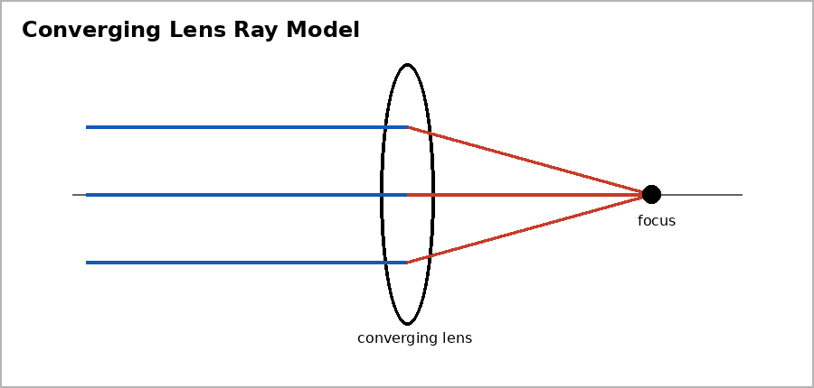

Unit 6 DOK 2.4 Lens Ray Diagram Interpretation V1
Name:
Version 1
Show work and mark answers clearly.

A converging lens forms an image on a screen.
- Classify the image as real or virtual.
- State whether it is likely upright or inverted.
- Explain what evidence supports your answer.
Unit 6 DOK 2.4 Lens Ray Diagram Interpretation V2
Name:
Version 2
Show work and mark answers clearly.
An object is placed inside the focal length of a converging lens, and the observer sees a larger upright image.
- Classify the image.
- Explain why it cannot be projected onto a screen.
Unit 6 DOK 2.4 Lens Ray Diagram Interpretation V3
Name:
Version 3
Show work and mark answers clearly.
A diverging lens makes rays spread apart, and the image appears smaller and upright.
- Classify the image as real or virtual.
- Explain how the ray behavior supports the classification.
Unit 6 DOK 2.4 Lens Ray Diagram Interpretation V4
Name:
Version 4
Show work and mark answers clearly.
A projector lens forms a large image on a wall.
- Classify the image.
- Explain why adjusting focus changes where the rays meet.
Unit 6 DOK 2.4 Lens Ray Diagram Interpretation V5
Name:
Version 5
Show work and mark answers clearly.
A magnifying glass is used to read small print.
- Describe the image orientation and type.
- Explain the role of object distance relative to focal length.
Unit 6 DOK 2.4 Lens Ray Diagram Interpretation V6
Name:
Version 6
Show work and mark answers clearly.
A student says all lenses make real inverted images.
- Critique the claim.
- Give one lens situation that forms a virtual image.